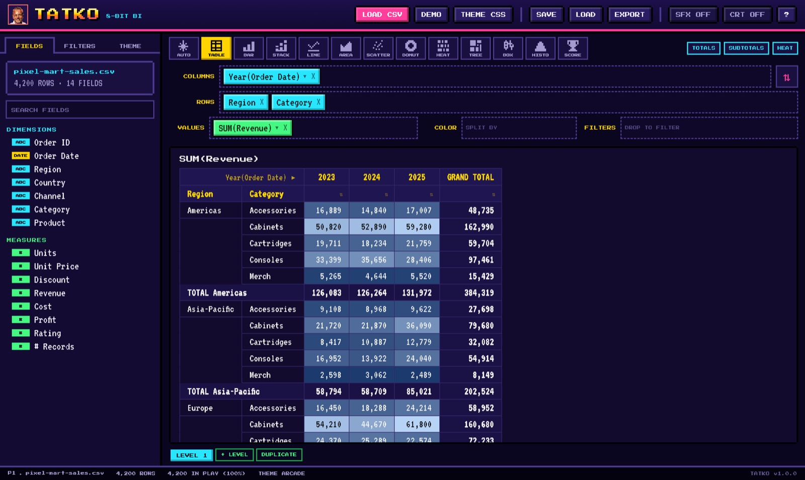
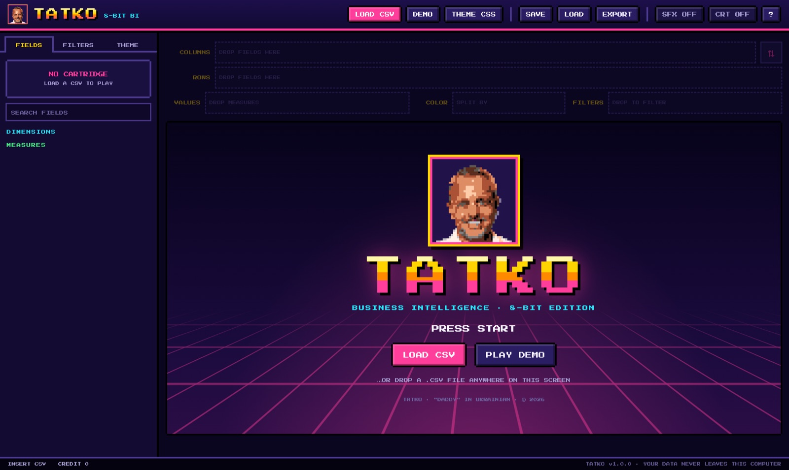
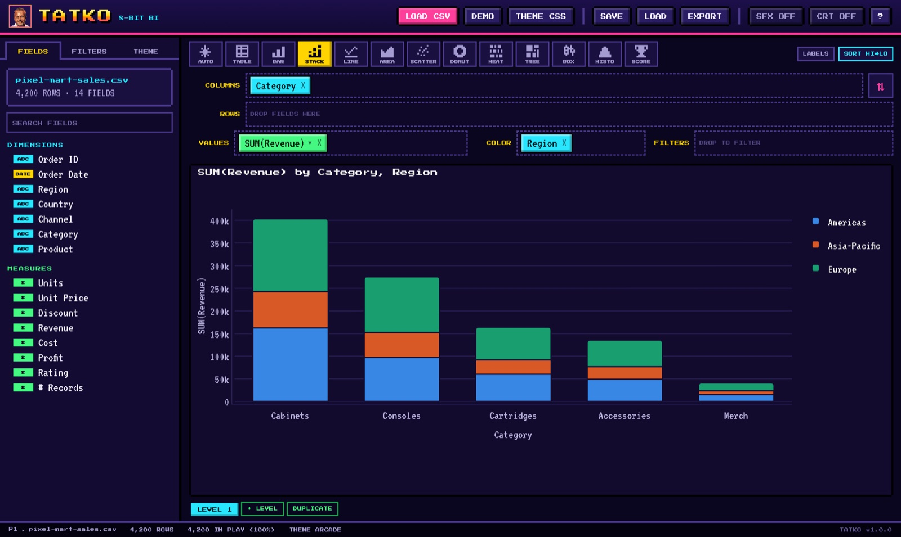
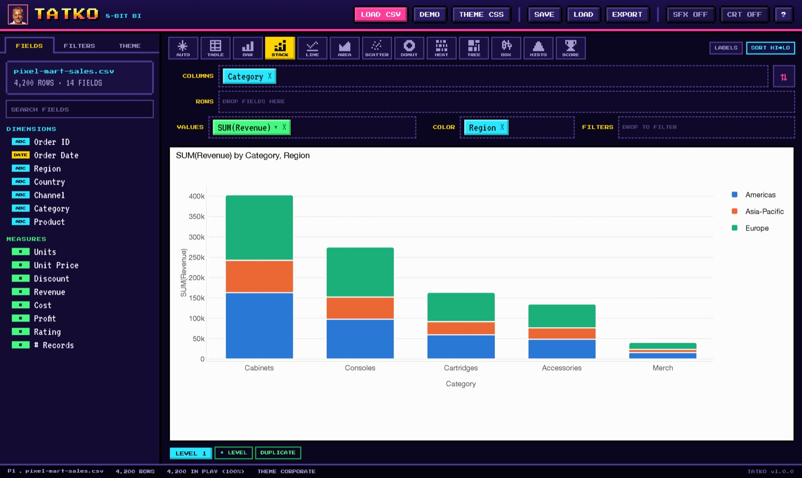
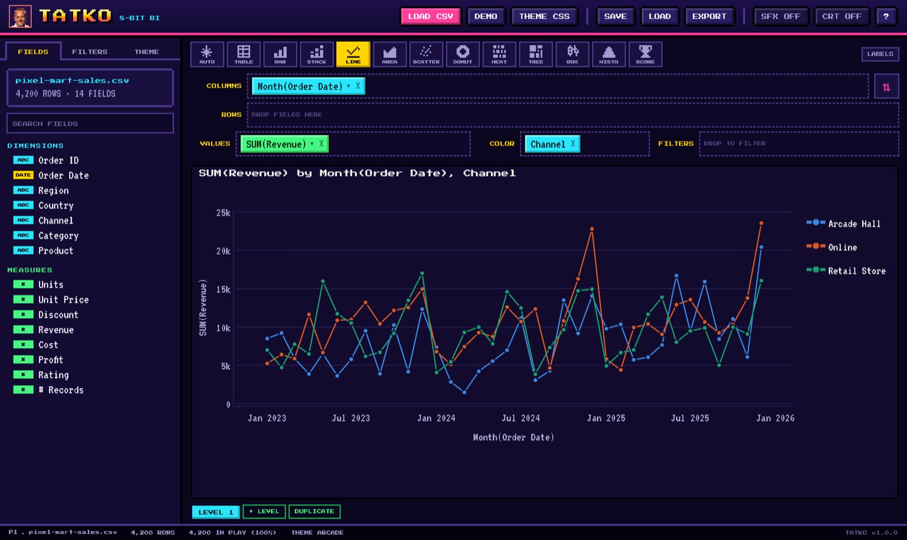

DRAG & DROP SHELVES
Pick up a field on the left, drop it on Columns, Rows, Values, Color or Filters. The view redraws as soon as you let go (with a coin sound, if you want one).
INSERT CSV TO CONTINUE
Drag. Drop. Pivot.
Business intelligence for one CSV file, served in glorious 8-bit.
FREE · WORKS OFFLINE · MAC APP, OR ANY BROWSER ON WINDOWS & LINUX

Everything you need to explore a spreadsheet's worth of data, and nothing you have to configure.
Pick up a field on the left, drop it on Columns, Rows, Values, Color or Filters. The view redraws as soon as you let go (with a coin sound, if you want one).
Several levels of rows and columns, subtotals, grand totals, heat shading and click-to-sort. Drag pills between shelves or hit ⇅ to swap rows and columns.
Bar, stacked, line, area, scatter, donut, heatmap, treemap, box plot, histogram and score tiles. AUTO picks a sensible one, and you can export any chart as PNG or SVG.
Searchable checklists for categories, from/to ranges for numbers and dates. Filters apply to every sheet, and the status bar shows how many rows are still in play.
Load a .css file with your colors and fonts. Charts and tables follow it, so you can keep the arcade around the edges and put your house style in the middle.
Commas, semicolons, tabs or pipes. Decimal commas, thousands separators, European and US dates, and Excel's Windows encoding are all detected for you.
Keep several sheets ("levels") side by side. Tatko remembers your layout for each file and can save it, with filters and theme, to a small .tatko.json file.
Tatko runs entirely in your browser. No server, no account, no upload. Your CSV never leaves your computer.
Click LOAD CSV or drop a file anywhere on the window. Tatko sorts the columns into DIMENSIONS (text, dates, IDs) and MEASURES (numbers).

Category to Columns, Revenue to Values, Region to Color, and you have a stacked bar chart. Click a pill to switch SUM to AVERAGE, or YEAR to MONTH.

Choose TABLE for a pivot table, stack dimensions on rows and columns, turn on heat shading, and drop fields on Filters to zoom in on what matters.
The interface is always 1985. The charts and tables follow a CSS file you choose, using your palette, your fonts and your table style.

/* every line is optional */
@import url("https://fonts.googleapis.com/css2?family=Inter");
:root {
--tatko-font-family: "Inter", sans-serif;
--tatko-font-size: 13px;
--tatko-text-color: #0b0b0b;
--tatko-background: #ffffff;
--tatko-grid-color: #e6e5e0;
--tatko-palette: #2a78d6, #eb6834, #1baf7a, #eda100;
--tatko-sequential: #cde2fb, #104281;
--tatko-table-header-background: #0b0b0b;
--tatko-table-header-color: #ffffff;
}.css file on the window.--tatko-* variables, plus plain font-family, color and background on :root or body.@import or @font-face.EXAMPLES: arcade.css · corporate.css · editorial-webfont.css

Version 1.0.0. Pick your cartridge: the native Mac app, or the zip that runs in any browser on Windows, Linux or Mac.
macOS 13 Ventura or later · Apple silicon & Intel
DOWNLOAD .DMG ▼Tatko isn't notarized by Apple yet, so macOS asks you to confirm once. Click Done, open System Settings › Privacy & Security, scroll down and click Open Anyway next to Tatko. You won't be asked again.
Windows, Linux or Mac · Chrome, Edge, Firefox or Safari 16.4+
DOWNLOAD .ZIP ▼index.html in the Tatko folder. It opens in your browser, no install needed.Both versions run entirely on your computer. No internet connection, no account, and your data never leaves your machine.
The app, a fictional 4,200-row demo dataset (samples/), three example theme files (themes/), and offline copies of plotly.js and the pixel fonts.
Demo CSV · Play in the browser (your files stay on your computer there too).
Татко (TAHT-ko) is Ukrainian for Daddy. Every arcade needs a player one, and Tatko's is pixelled from the real daddy himself.